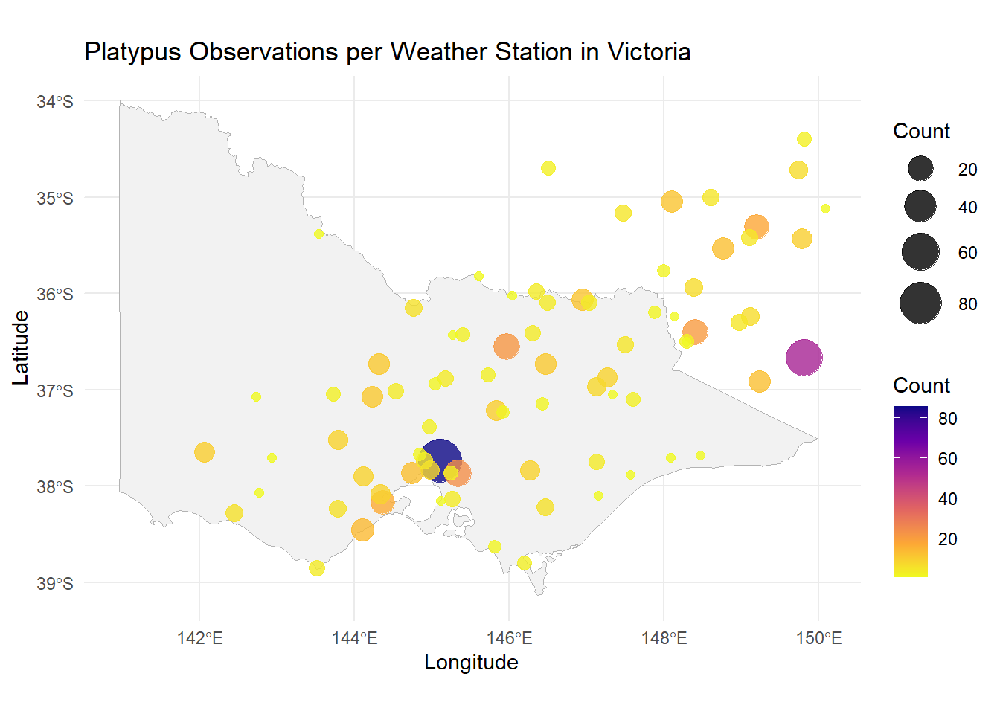

load(file= "../data/platypus_2024.RDA")Medium Task for GSOC
Task 2 (Medium)
- Use the
GSODRpackage to download one year of daily weather data (temperature and precipitation) for a station in Victoria, Australia, near where large numbers of platypus are spotted.
Actionable Workflow
My approach is doing a spatial join between platypus sightings and GSOD weather stations, then aggregating to identify the most relevant stations.
Filter Platypus Sightings to Victoria
Load Data platypus
Filter Platypus Sightings to Victoria
library(dplyr)
platypus_2024_vic <- platypus_2024 %>%
filter(decimalLatitude >= -39, decimalLatitude <= -34,
decimalLongitude >= 141, decimalLongitude <= 150)Get All GSOD Stations in Victoria
Install and load package
if (!requireNamespace("GSODR", quietly = TRUE)) {install.packages("GSODR")}
library(GSODR)Download and Return weather station Data
stations <- get_inventory()vic_stations <- stations %>%
filter(CTRY == "AS", LAT >= -39, LAT <= -33.9, LON >= 140.9, LON <= 150.1) %>%
select(STNID, NAME, LAT, LON)
head(vic_stations) STNID NAME LAT LON
<char> <char> <num> <num>
1: 945959-99999 WANGARATTA -36.416 146.307
2: 945959-99999 WANGARATTA -36.416 146.307
3: 945959-99999 WANGARATTA -36.416 146.307
4: 946920-99999 LAKE VICTORIA STORAGE -34.050 141.267
5: 946920-99999 LAKE VICTORIA STORAGE -34.050 141.267
6: 946920-99999 LAKE VICTORIA STORAGE -34.050 141.267Relate Each Occurrence to Its Nearest Station
Use a spatial distance function to map each platypus record to its closest station:
if (!requireNamespace("geosphere", quietly = TRUE)) {install.packages("geosphere")}
library(geosphere)
# For each occurrence, find the nearest station
nearest_station_ids <- sapply(1:nrow(platypus_2024_vic), function(i) {
dists <- distHaversine(
cbind(vic_stations$LON, vic_stations$LAT),
c(platypus_2024_vic$decimalLongitude[i], platypus_2024_vic$decimalLatitude[i])
)
vic_stations$STNID[which.min(dists)]
})
# Add the nearest station ID to the platypus data
platypus_2024_vic$nearest_station <- nearest_station_idsCount Number of Sightings per Station
station_counts <- platypus_2024_vic %>%
count(nearest_station, sort = TRUE) %>%
left_join(vic_stations, by = c("nearest_station" = "STNID")) |>
distinct()
head(station_counts)# A tibble: 6 × 5
nearest_station n NAME LAT LON
<chr> <int> <chr> <dbl> <dbl>
1 958740-99999 86 VIEWBANK (ARPNSA) -37.7 145.
2 959310-99999 55 BEGA AWS -36.7 150.
3 948720-99999 24 FERNY CREEK -37.9 145.
4 948840-99999 22 BENALLA (SHADFORTH STREET) -36.6 146.
5 949150-99999 21 PERISHER VALLEY AWS -36.4 148.
6 949260-99999 18 CANBERRA -35.3 149.#install.packages("ozmaps")
library(ggplot2)
library(ozmaps)
# Filter only VIC map
vic_map <- ozmaps::ozmap_states %>%
dplyr::filter(NAME == "Victoria")
# Plot
ggplot() +
geom_sf(data = vic_map, fill = "gray95", color = "gray70") +
geom_point(data = station_counts,
aes(x = LON, y = LAT, size = n, color = n),
alpha = 0.8) +
scale_color_viridis_c(option = "plasma", direction = -1) +
scale_size_continuous(range = c(2, 10)) +
labs(
title = "Platypus Observations per Weather Station in Victoria",
x = "Longitude", y = "Latitude",
size = "Count", color = "Count"
) +
coord_sf() +
theme_minimal()
Choose Top Stations
top_stations <- station_counts %>%
slice_max(n, n = 3) # Top 3 stations by sighting proximity
head(top_stations)# A tibble: 3 × 5
nearest_station n NAME LAT LON
<chr> <int> <chr> <dbl> <dbl>
1 958740-99999 86 VIEWBANK (ARPNSA) -37.7 145.
2 959310-99999 55 BEGA AWS -36.7 150.
3 948720-99999 24 FERNY CREEK -37.9 145.Download Weather Data for Top 3 Stations
weather_data_list <- lapply(top_stations$nearest_station, function(stn) {
get_GSOD(years = 2024, station = stn)
})
# Combine if needed
weather_data_combined <- dplyr::bind_rows(weather_data_list)tidying datasets colnames
save data
save(platypus_2024_vic, file = "../data/platypus_2024_vic.RDA")
save(vic_stations, file = "../data/vic_stations.RDA")
save(weather_data_combined, file = "../data/weather_data.RDA")🔗 Data Structure and Relationships
All three datasets share a common key: STNID, which represents a unique weather station ID.
1. platypus_2024_vic
| Column | Description |
|---|---|
LAT, LON |
Coordinates of platypus sightings |
YEAR, eventDate |
Year and full timestamp of sighting |
scientificName |
Name of the species (platypus) |
STNID |
Nearest weather station ID (linked key) |
2. vic_stations
| Column | Description |
|---|---|
STNID |
Weather station ID (primary key) |
NAME |
Name of the station |
LAT, LON |
Coordinates of the station |
3. weather_data_combined
| Column | Description |
|---|---|
STNID |
Weather station ID (linked key) |
DATE |
Date of observation |
TEMP |
Daily mean temperature (°C) |
TEMP_MIN, TEMP_MAX |
Daily min/max temperatures |
PRCP |
Daily precipitation (mm) |
DEWP, WDSP, VISIB |
Other daily weather variables |
These datasets can be joined using STNID for analyses like:
- Matching platypus sightings with same-day weather
- Analyzing seasonal patterns in specific regions
- Aggregating sightings and climate trends by station